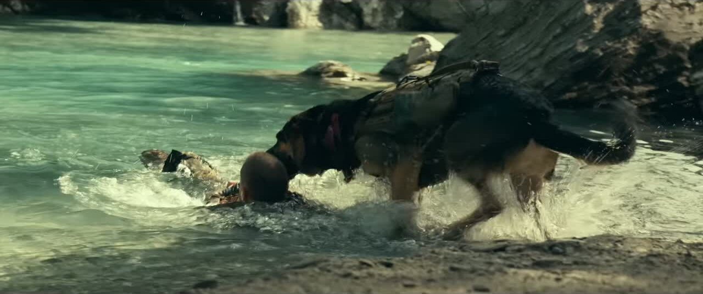

قلب الوحش
Heart of the Beast 2026
يستاهل. براد بيت مع كلبه أودين في رحلة نجاة بأدغال ألاسكا، وقلب الوحش ياب بتقييم نقاد 88%. النقاد يوصفونه من أحسن أفلام David Ayer، وقصة الإنسان والكلب توّجع القلب بصدق.
Rotten Tomatoes 88% الجمهور 96%120 دقيقةPG13أكشن، إثارة، مغامرة
جندي قوات خاصة متقاعد يمشي 58 ميلاً في براري ألاسكا مع كلبه الحربي بعد ما طاحت طيارتهم المائية.
- المخرج
- David Ayer
- البطولة
- Brad Pitt، J. K. Simmons، Anna Lambe
- اللغة
- إنجليزي، ترجمة عربي
- في الإمارات
- 7 سلاسل، 555 عرض هالأسبوع